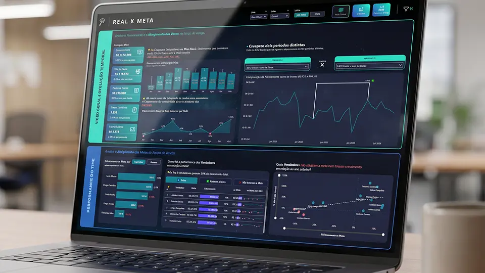

Python para Análise de Dados
Você sai escrevendo Python básico voltado pra análise, sem desviar pra desenvolvimento de software.
A formação pensada pra profissional de negócio, não pra dev de carreira. Python como ferramenta pra você decidir melhor, não como linguagem pra você virar engenheiro.
Não é "virar programador". É usar Python pra automatizar o braçal e responder pergunta que Excel e Power BI sozinhos não respondem.
7 cursos sequenciais, ~58h. Ordem do 1 ao 7, cada um construindo sobre o anterior.
Você sai escrevendo Python básico voltado pra análise, sem desviar pra desenvolvimento de software.
Você sai conectando API real (REST, JSON, autenticação) e trazendo dado de fora pro seu fluxo.
Você sai manipulando DataFrame grande com performance, fazendo o que Excel não consegue.
Você sai aplicando regressão, correlação e teste de hipótese em pergunta concreta de negócio. Base que destrava ML aplicado.
Você sai aplicando modelo supervisionado e não-supervisionado em pergunta real, sem ficar perdido em matemática avançada.
Você sai sabendo processar volume de dado corporativo em ambiente distribuído. Ferramenta que aparece em vaga sênior de Engenheiro de Dados.
Você sai com um sistema de recomendação completo no portfólio, projeto que diferencia em entrevista.
Você sai com sistema funcional e automações reais que valem em entrevista e no trabalho atual.

Projeto finalSistema funcional do zero (carregamento, modelagem, recomendação, validação). Conduzido por Leo Karpinski, vira projeto-âncora do portfólio.
Python & Data Science Aplicado, do Automatizar ao Aplicar Modelo
Sintaxe básica, estruturas de dado, fluxo de controle. Você sai escrevendo Python aplicado a análise, sem desviar pro mundo de desenvolvimento de software.
DataFrame, agrupamento, merge, transformação, performance. Você sai fazendo no Pandas o que Excel não aguenta, com leveza pra base de milhões de linhas.
Conexão com API externa (REST, JSON, autenticação), automação de rotina manual (consolidar, gerar PDF, mandar email). Liberação de tempo concreto na rotina.
Modelo supervisionado e não-supervisionado, validação, interpretação. Você sai aplicando ML em pergunta de negócio, com discernimento de quando usar e quando não usar.
Profissionais de mercado que aplicam Python e ML em problema de empresa. Não acadêmicos.
Especialista em Python para Análise de Dados e Machine Learning.
Mentor principal da formação, conduz 3 dos 7 cursos (Python, Pandas, Introdução a Machine Learning). Pedagogia voltada pra profissional de negócio, não pra dev de carreira.
Especialista em APIs com Python.
Conduz o curso de APIs, focado em integração real com sistema externo (CRM, ERP, marketing).
Especialista em Estatística para Análise de Dados.
Conduz o curso de estatística aplicada, sem matemática acadêmica desconectada do dia a dia. Base direta pra interpretar e validar modelo de ML.
Especialista em Databricks e Spark.
Conduz o curso de processamento distribuído com Spark, ferramenta que aparece em vaga sênior de Engenheiro de Dados e Analytics Engineer.

CEO da Xperiun, autor da Imersão, +35 mil alunos no ecossistema.
Conduz o Projeto Final de Sistema de Recomendação, fechamento da formação que vira ativo de portfólio.
Feita pra você que quer salto técnico mas não quer migrar pra TI.
Você é analista de área (administrativo, comercial, operações) e gasta 6-10 horas por semana consolidando planilha, montando PDF, copiando dado entre sistemas. Quer automatizar essa parte pra liberar tempo pra análise de verdade, sem ter que pedir dev pra escrever script.
Encaixe ideal: Pandas + APIs + automação cobrem exatamente a liberação de tempo da rotina manual.
Você já entrega dashboard em Power BI e SQL, mas começou a receber pedido de "modelo preditivo" (churn, propensão, segmentação). Quer aprender ML aplicado, suficiente pra entregar resposta funcional, sem virar cientista de dados de carreira.
Encaixe ideal: Estatística + Intro a ML + Projeto de Recomendação entregam ML funcional sem rabo acadêmico.
Você decidiu migrar pra ciência de dados mas vem de Administração, Engenharia ou Economia, sem base técnica em programação. Quer aprender Python e ML em ritmo aplicado, com projeto real no portfólio, antes de aplicar pra vaga júnior em DS.
Encaixe ideal: Sequência completa do zero ao Projeto Final entrega portfólio aplicável.
Você administra negócio digital (e-commerce, SaaS, conteúdo) e quer começar a aplicar recomendação personalizada, segmentação de cliente ou previsão simples. Quer construir o primeiro modelo você mesmo antes de contratar consultoria de R$ 30 mil.
Encaixe ideal: Sistema de Recomendação como projeto final aplica direto em e-commerce ou SaaS.

Assistir depoimento de:
Edson

Assistir depoimento de:
Eduardo

Assistir depoimento de:
Cláudio

Assistir depoimento de:
Cleiton

Assistir depoimento de:
Daniel

Assistir depoimento de:
Vinícius

Assistir depoimento de:
Gabriel

Assistir depoimento de:
Ezequiel

Assistir depoimento de:
Louiz

Assistir depoimento de:
Pedro

Assistir depoimento de:
Vitória
Discord, fórum e lives quinzenais. Onde você cola erro de Pandas e alguém responde em minutos.
Projeto final entregue, ativo direto pro portfólio, conduzido por Leo Karpinski.
Referência rápida pra consulta durante trabalho do dia a dia, com exemplos prontos.
Scripts iniciais pra consolidação de planilha, geração de PDF, envio de email, reusáveis na sua empresa.
Certificado oficial Xperiun de conclusão da Formação, reconhecido por empresa que tem alunos da Xperiun no time.
Leva só essa formação, ou todas as 7 mais cases mais comunidade mais certificado MEC.

Anuidade com crédito vitalício de upgrade. Se decidir subir pra Completa depois, os R$ 997 viram crédito integral.

Anuidade. Crédito vitalício. O que você paga nunca evapora.

Mensalidade só vale enquanto você paga: parou, perdeu tudo. Aqui é anuidade, e se você não renovar, os R$ 997 viram crédito vitalício pra subir pra Xperiun Completa, MBA ou Pós Tech. Crédito não vence, sem letra miúda.
Não. O curso 1 (Python para Análise de Dados) parte do zero, sem pressuposto de programação. A formação foi pensada pra profissional de negócio, não pra dev de carreira.
Não, e esse é o ponto. Você sai usando Python como ferramenta de análise e automação, não como identidade profissional. Continua analista, continua na sua área de negócio, mas agora com superpoder técnico que 80% da concorrência não tem.
Não. O curso de Introdução a ML foi estruturado pra profissional de negócio, com foco em aplicação e interpretação, não em derivação matemática. Você sai aplicando modelo, lendo resultado e tomando decisão, sem ter que provar teorema.
Aluno que dedica 1 hora por dia (5h por semana) termina em 12 a 15 semanas. Carga total ~58h. Os cursos densos (ML, Databricks e Projeto Final) pedem prática hands-on, então quem só assiste sem implementar leva mais.
Depende do objetivo. SQL é mais imediato (autonomia direta no trabalho atual), Python é mais escalável (automação e ML). Se você precisa de uma resposta imediata pro chefe na semana que vem, SQL. Se você está construindo carreira de 2-3 anos, Python rende mais.
Os R$ 997 que você pagou na Formação 5 viram desconto integral se subir pra Xperiun Completa depois. R$ 1.997 da Completa menos R$ 997 já pagos = R$ 1.000 pra fechar. Crédito vitalício, não vence.
Você tem comunidade Xperiun por 90 dias, fórum de dúvida e suporte. Python trava muito no início (instalação, ambiente, primeira biblioteca), depois flui. Faz parte do nível.
Em 12 a 15 semanas, você automatiza o braçal, conecta API, aplica modelo e sai com sistema de recomendação no portfólio.